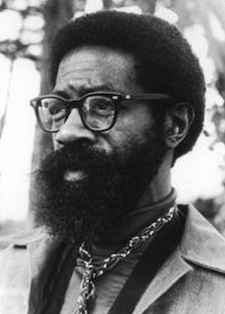

Power To The People
Inner Urge

In N' Out
Here's a list of my Top Five Saxophonists(in no order):
Joe is my favorite saxophonist, and perhaps my favorite musician. The thing I love about Joe is that he was versatile. He had the ability to switch forms depending on what the recording needed. He could play straight bop, avant garde, soul, and anything else. His playing style is my inspiration to try to excel at many different things without bounds.
My top three Joe Henderson albums:
Essentially the definitive player at his instrument. Though his career was not long (approximiately 12 years of recordings), Trane left a lasting impression not just on the form called "jazz", but on music as a whole. My son's middle name is Coltrane in tribute.

My top three John Coltrane albums:
Sonny plays with edge, playfulness, and mastery. While there are players that are more popular, note for note, there aren't many if any, that are better.
My top three Sonny Rollins albums:
Yusef embodies the beauty of the human spirit in his playing. Everything he made was beautiful whether it was with the tenor, soprano, or flute.
My top three Yusef Lateef albums:
Jackie has one of the most identifiable registers. Every note was intense. It's like he played as if his life depended on it.
My top three Jackie McLean albums: